按 AirPods 即可静音
任何通话中按压耳机柄一次即可静音，再按一次取消静音。即使在 Chrome 中也同样好用，轻松解决 Google Meet 等网页版通话忽略 AirPods 按压的问题。
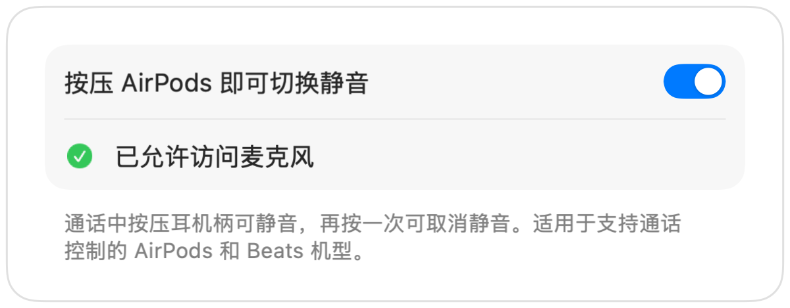


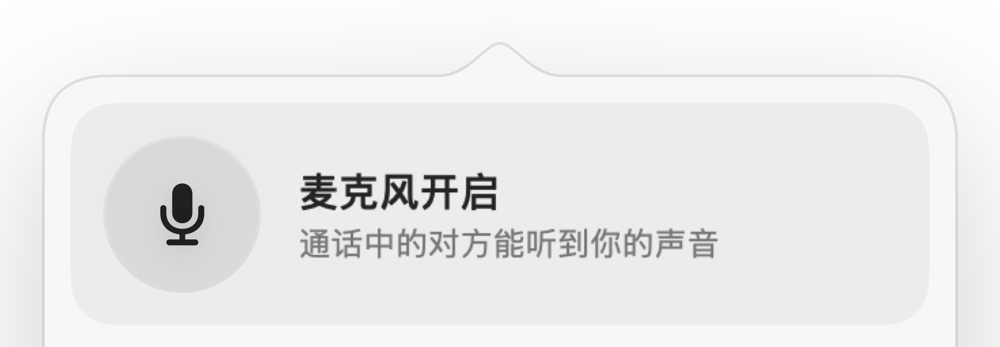
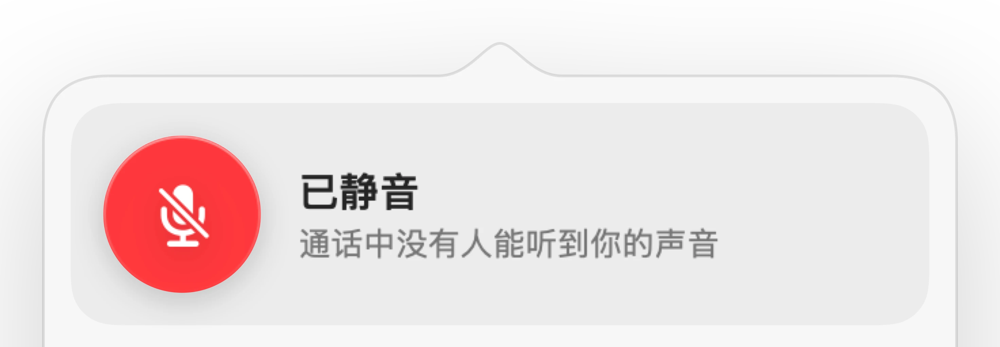
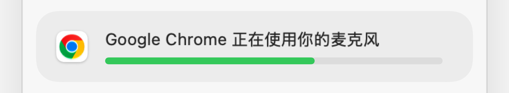
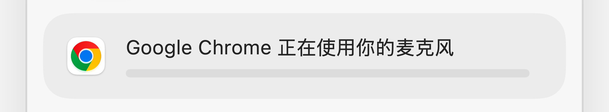
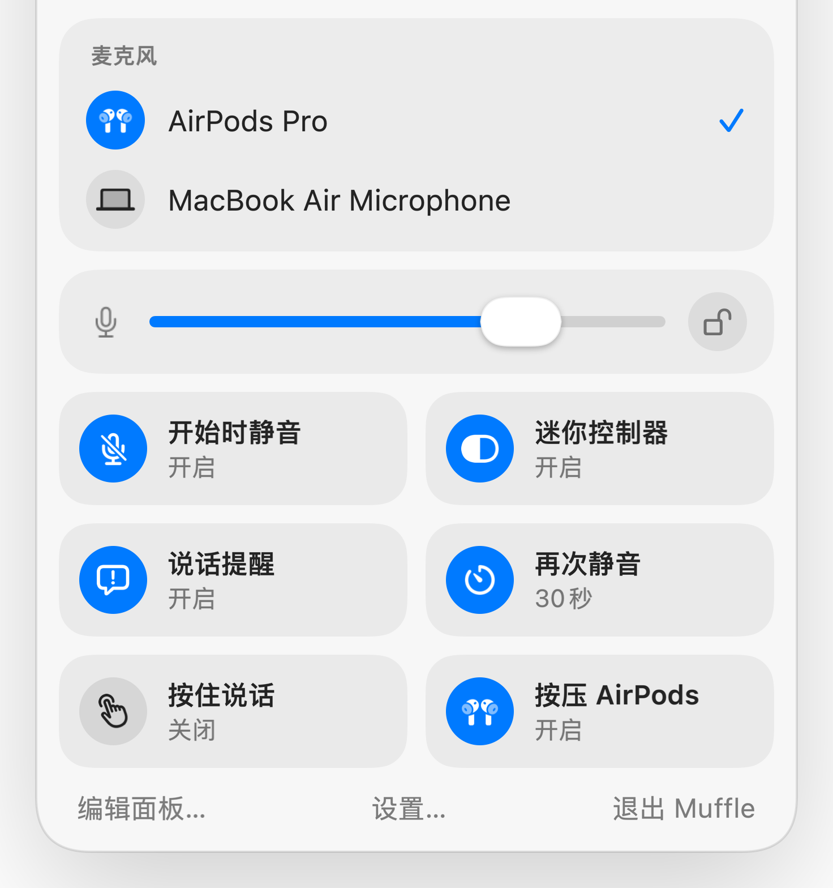
Mac 版 Muffle
只需按压 AirPods 或按下键盘快捷键。Muffle 会在硬件层面直接关闭麦克风，让 Google Meet、Zoom、Teams、Slack 等所有 App 都听不到任何声音。
免费试用 3 天，之后一次性购买，无需订阅。 适用于 macOS 14 Sonoma 及更高版本。
点按按钮、按 AirPods 或使用快捷键。Muffle 会直接关闭麦克风本身，让所有 App 接收到的都是静音。
直接在菜单栏中静音、选取麦克风、锁定音量，以及开启或关闭各项功能。
Mac 上的所有麦克风尽在眼前。只需选取一个，所有 App 都会随之切换。
Chrome、Zoom 和 Teams 会自动更改麦克风音量。开启锁定后，Muffle 会自动将其复原。
直接从面板开启或关闭各项功能，并随心选取面板中显示的开关。
大多数静音按钮只能将单个 App 静音。Muffle 会直接关闭麦克风本身，让 Mac 上的每个 App 接收到的都是静音。
随心选取菜单栏图标：普通图标、绿和红，或是圆点。Muffle 还可以随 Mac 一起启动。
每次通话开始时都静音，通话结束后取消静音，在锁定 Mac 或耳机断开连接时自动静音。
轻按切换静音、按住说话，或按住暂时静音。还可设置独立的静音与取消静音按键，或使用右 ⌥ 等按键作为说话键。
选取菜单栏面板中显示的内容，以及底部放置哪些快捷开关。
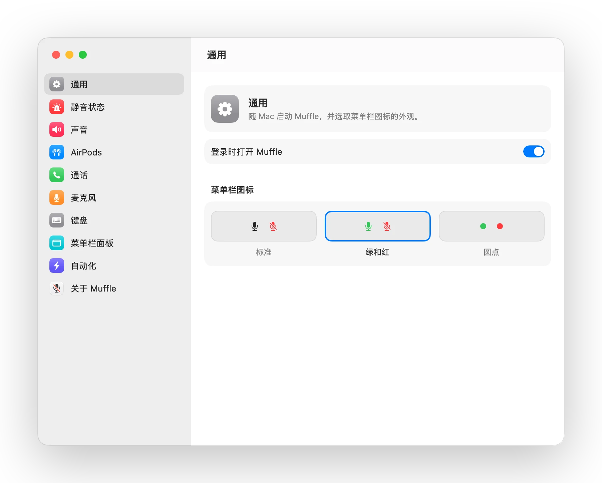
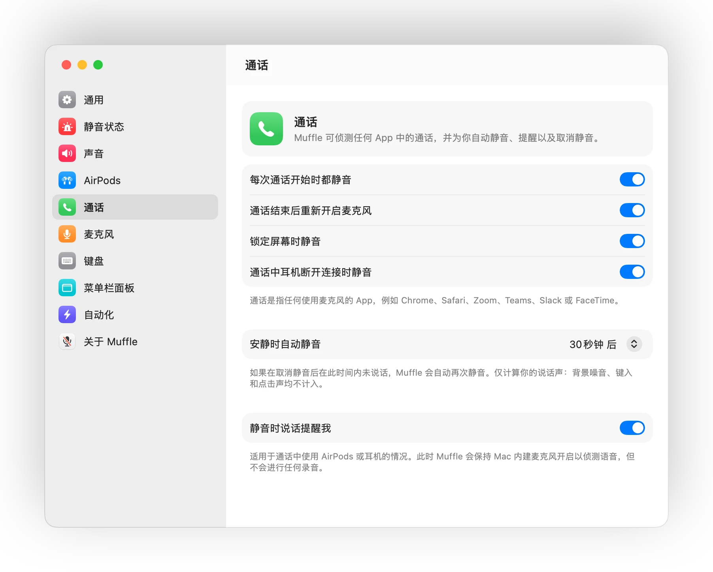
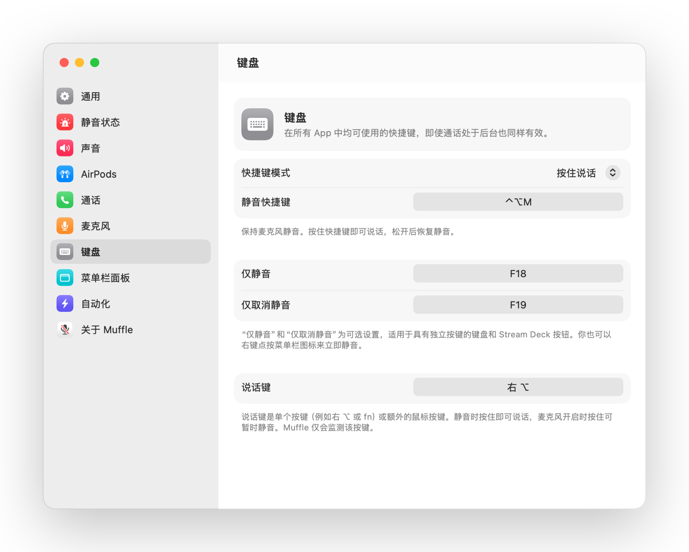
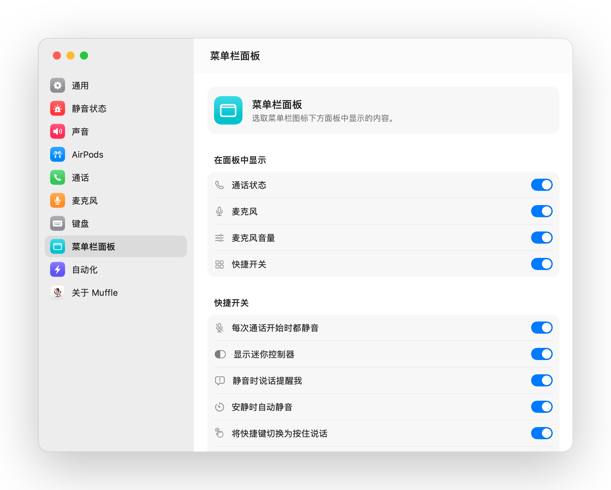
任何通话中按压耳机柄一次即可静音，再按一次取消静音。即使在 Chrome 中也同样好用，轻松解决 Google Meet 等网页版通话忽略 AirPods 按压的问题。

静音时说话会收到提醒，Muffle 会及时提示你，避免你滔滔不绝说了半天才发现无人听到。
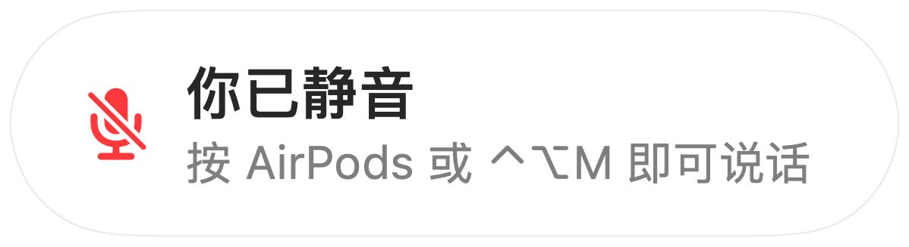
按下 Control-Option-M 即可随处静音，即使视频会议网页隐藏在后台标签页也能生效。静音时按住即可说话，松开后再次静音。
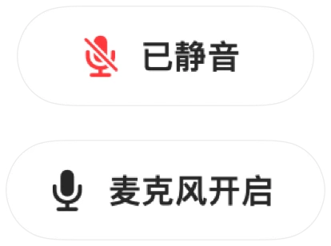
Chrome、Zoom 和 Teams 经常会自动调整麦克风音量。使用锁定功能后，Muffle 会自动恢复预设音量。

通话中显示迷你浮动控制器，直观展示话筒开启或静音状态。点按即可切换静音。
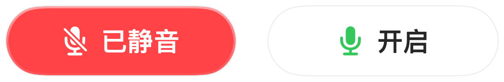
自由选择快捷键的使用方式：轻按切换、按住说话，或在咳嗽时按住静音。你也可以设置独立的静音与取消静音按键，或直接按住单个按键（如右 ⌥ 或额外的鼠标按键）。

取消静音只为说一句话？如果在你设定的时间内保持安静，Muffle 会自动再次静音。仅计算你的说话声，键入声或背景噪音均不计入。
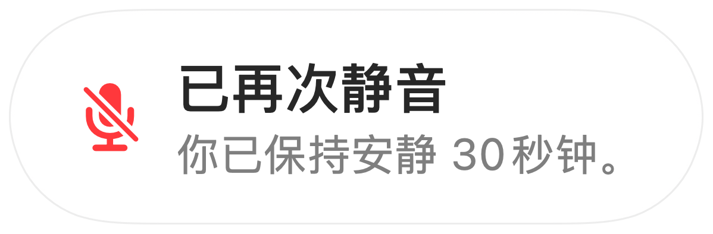
在安静的房间里使用 AirPods 时，Muffle 会建议使用 Mac 的麦克风，让 AirPods 能以完整音质播放通话。当周围变嘈杂时，它会建议切换回 AirPods 麦克风。
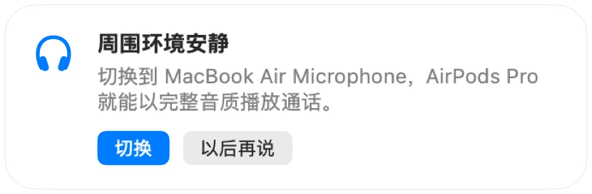
每次通话开始时都静音，通话结束后自动重新开启麦克风，锁定 Mac 屏幕时也会自动静音。
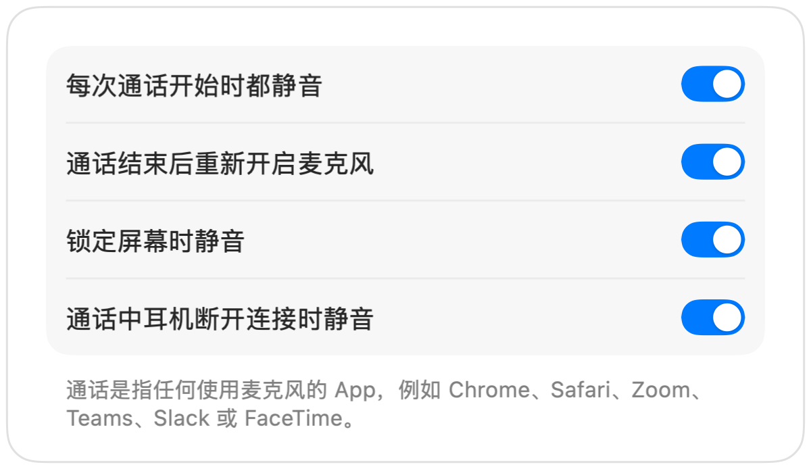
如果耳机在远程办公通话中突然断电，Muffle 会在切换到 Mac 内建麦克风前自动静音，防止室内声音意外传出。
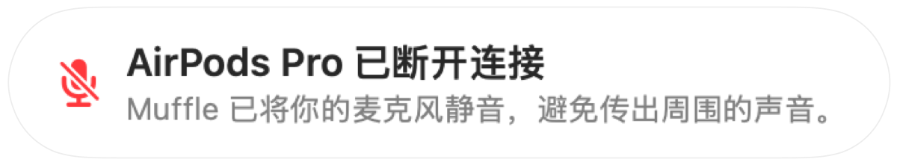
可通过“快捷指令” App、Siri、Stream Deck、Raycast 或控制中心按钮快速将麦克风静音。
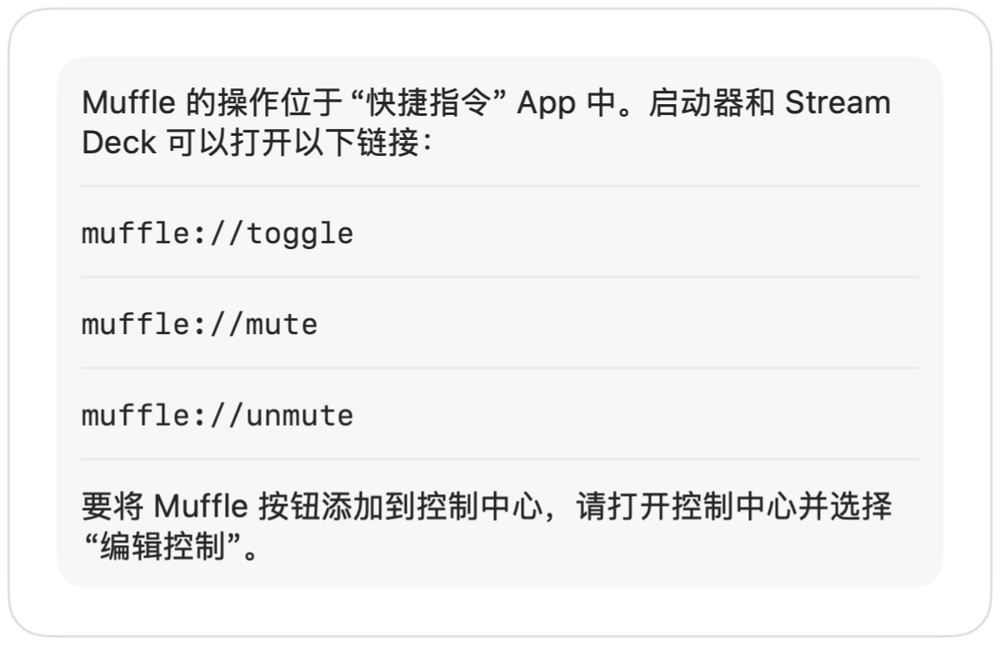
屏幕边缘闪烁绿光或红光、彩色菜单栏图标、悬浮按钮，以及可按麦克风单独关闭的提示音。随心开启你喜欢的方式。
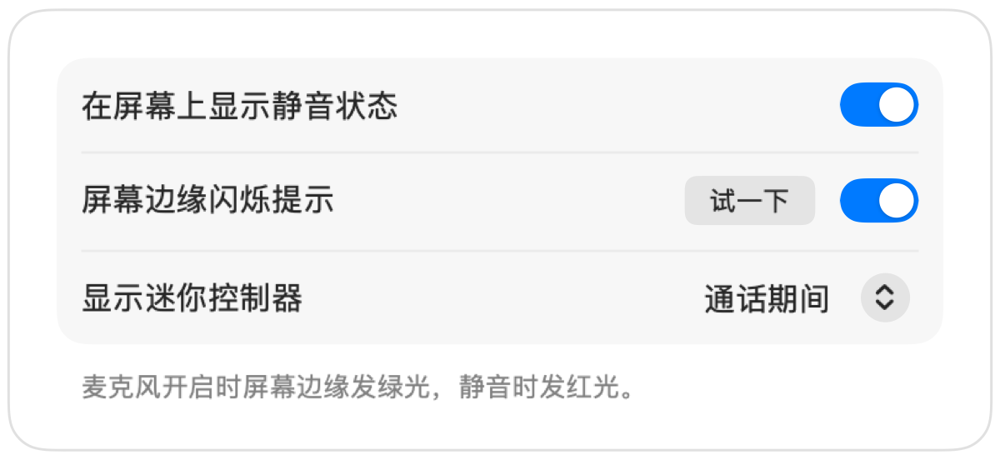
Muffle 绝不会录制、存储或发送音频。它仅负责开启和关闭麦克风，并读取麦克风音量。本 App 无需账户，不包含数据分析，也不进行任何追踪。
从 Mac App Store 安装 Muffle，并允许麦克风访问权限。
像平常一样在任意 App 中加入通话或视频会议。
按压 AirPods、按下 Control-Option-M 或点按菜单栏图标即可静音。
支持。Chrome 本身不会将 AirPods 的静音按压操作传递给网页通话，而 Muffle 会截获该操作并直接将麦克风静音。浏览器标签页中的任何通话同样适用。
你的通话 App 界面可能仍显示麦克风开启，因为 Muffle 关闭的是系统硬件麦克风，而不是软件内的静音按钮。无论如何，对方都听不到你的声音。静音时，菜单栏中的 Muffle 图标会变为红色。
支持 AirPods Pro、AirPods 3 及更新机型、AirPods Max，以及带有通话控制功能的 Beats 机型。键盘快捷键和菜单栏控制则适用于所有麦克风。
支持。Muffle 适用于 Mac 上所有使用麦克风的软件，无论是桌面客户端还是网页端通话均能完美兼容。
不需要。你可以免费试用全部功能 3 天，之后只需一次性购买即可永久解锁 Muffle。
macOS 只会将 AirPods 按压操作传递给正在使用麦克风的 App，因此 Muffle 需要在通话期间保持一条静音连接。此过程绝不会录制任何内容。
Muffle 在退出时会自动重新开启麦克风，确保你的话筒不会一直保持无声。
支持 macOS 14 Sonoma 及更高版本。控制中心按钮功能需要 macOS 26 或更高版本。
支持。在设置中选择“按住说话”，即可按住快捷键说话。你也可以按住单个按键（如右 ⌥ 或 fn）或额外的鼠标按键。
当通话使用 AirPods 麦克风时，AirPods 会切换到通话模式，播放音质会随之降低。在安静的房间里，Muffle 会建议改用 Mac 的麦克风，让 AirPods 始终以完整音质播放声音。
不会。Muffle 通过 Apple 的设备端声音分析技术识别语音，因此仅计算说话声。键入声、点击声和背景噪音均不计入，且不会进行任何录音。
Muffle 提供 3 天免费试用。